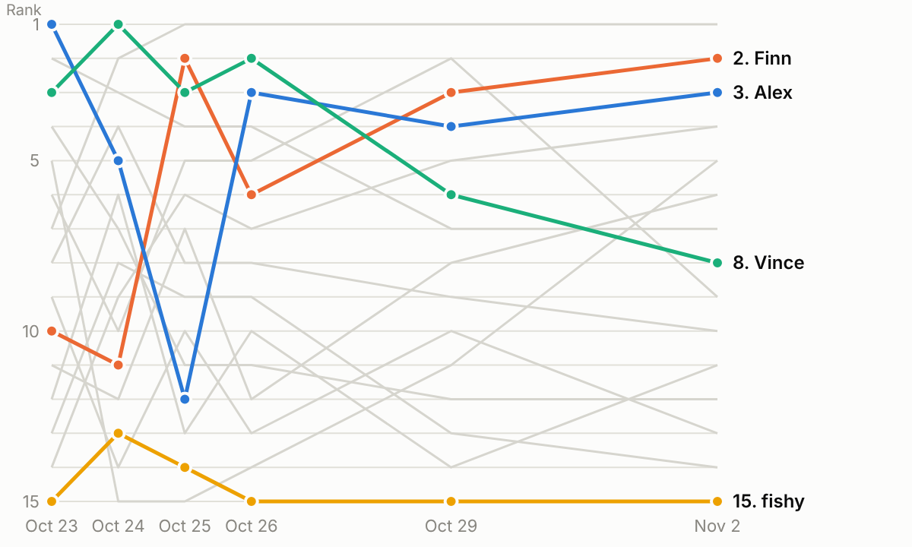
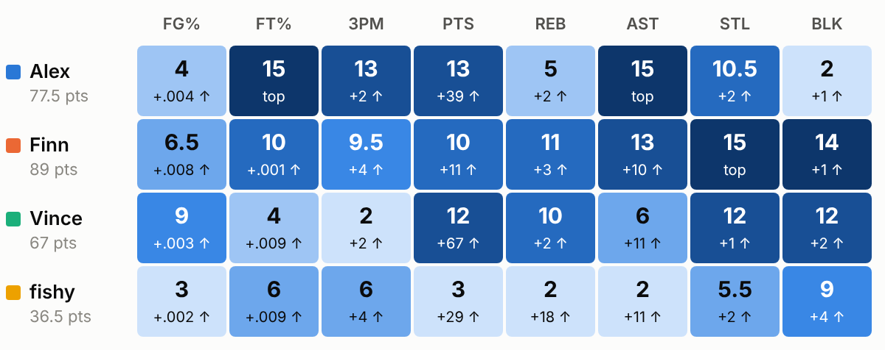
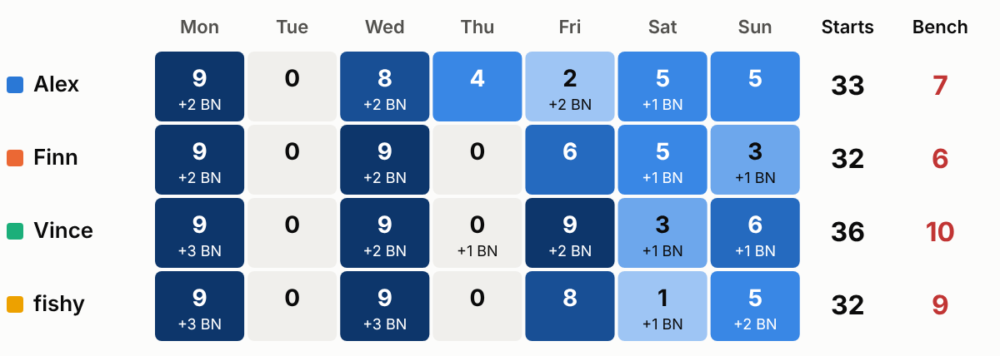
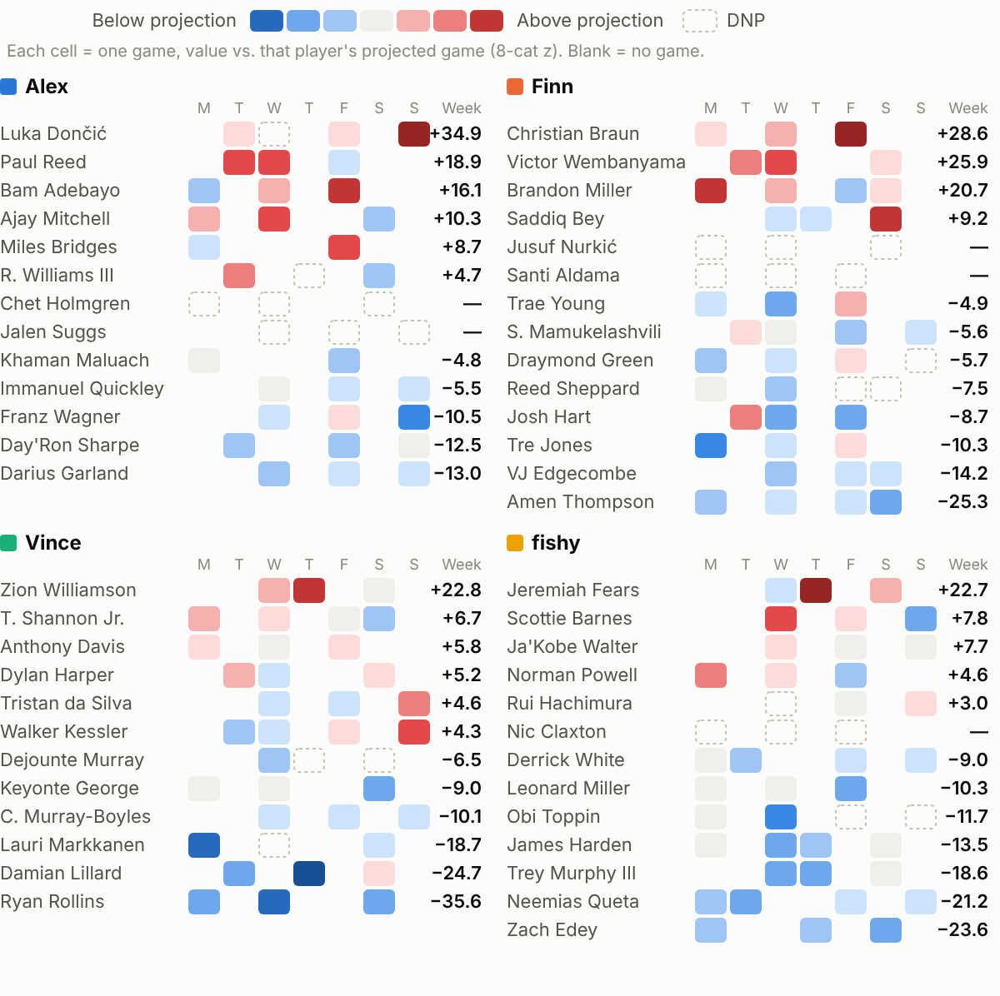

Yahoo standings through Nov 1. Week Δ is the change in overall rank since Oct 26.
| Team | Overall | Roto pts | Week Δ | Starter games |
|---|---|---|---|---|
| Finn Finn will turn Bert into bacon | #2 | 89 | ▲ 4 | 32 |
| Alex Shut Up and Jam Gaiden | #3 | 77.5 | – | 33 |
| Vince vincemvpcarter | #8 | 67 | ▼ 6 | 36 |
| fishy Fishy Achilles | #15 | 36.5 | – | 32 |
Overall rank in the 15-team league after each standings update. The four of us are in colour and the other 11 teams are grey.

Roto points per category (15 = best). The small number is how much more you need to pass the next team up. Small gaps are where to aim this week.

Starters with a game each day (Mon Nov 2 – Sun Nov 8), not counting anyone listed Out. "BN" = bench players with a game who won't count. Lineups lock for the whole week, so set them now.

Lineup check (best legal 9 by projected value × games, same math for everyone):
• Alex: start Immanuel Quickley (3g) over Paul Reed (3g).
• Finn: lineup looks right for this week's schedule.
• Vince: lineup looks right for this week's schedule.
• fishy: start Rui Hachimura (3g) over Ja'Kobe Walter (3g).
Oct 26 – Nov 1. Red = beat his projection, blue = stunk.

Generated by Draft Edge from Yahoo standings and lineups, Hashtag Basketball stats and the NBA schedule. Projections are draft-season estimates, so treat them as trash-talk grade.